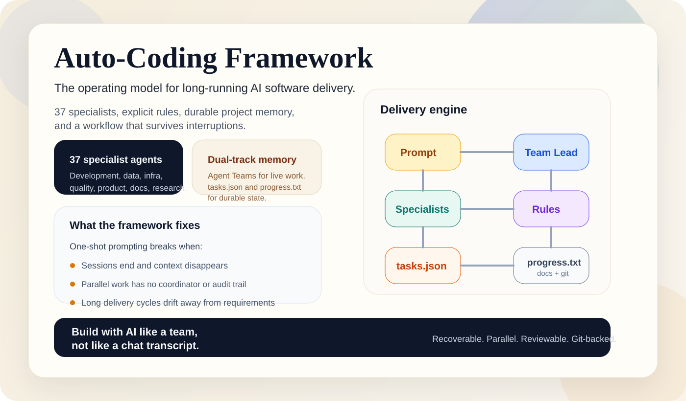
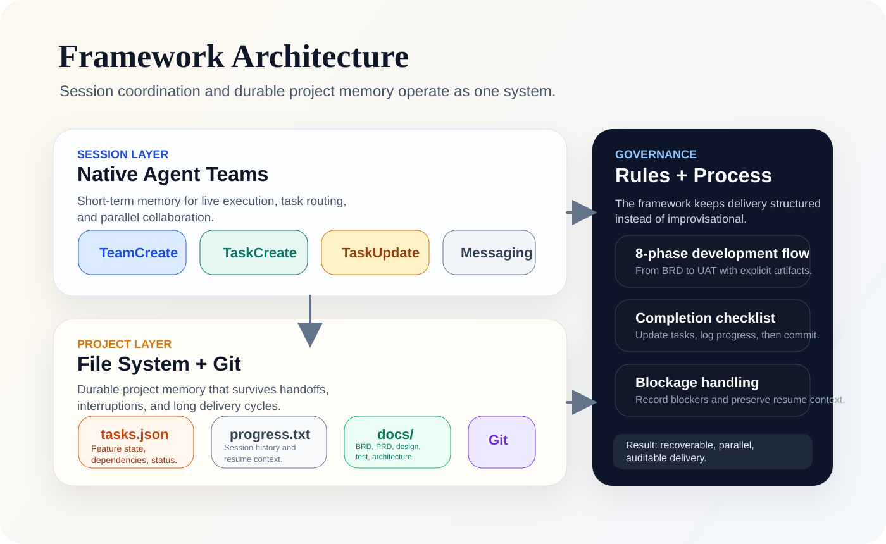
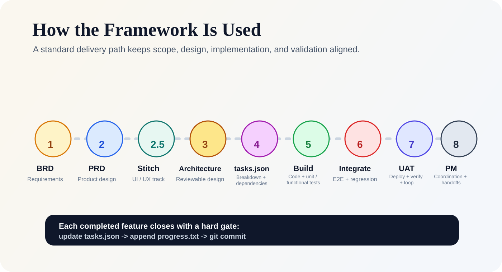
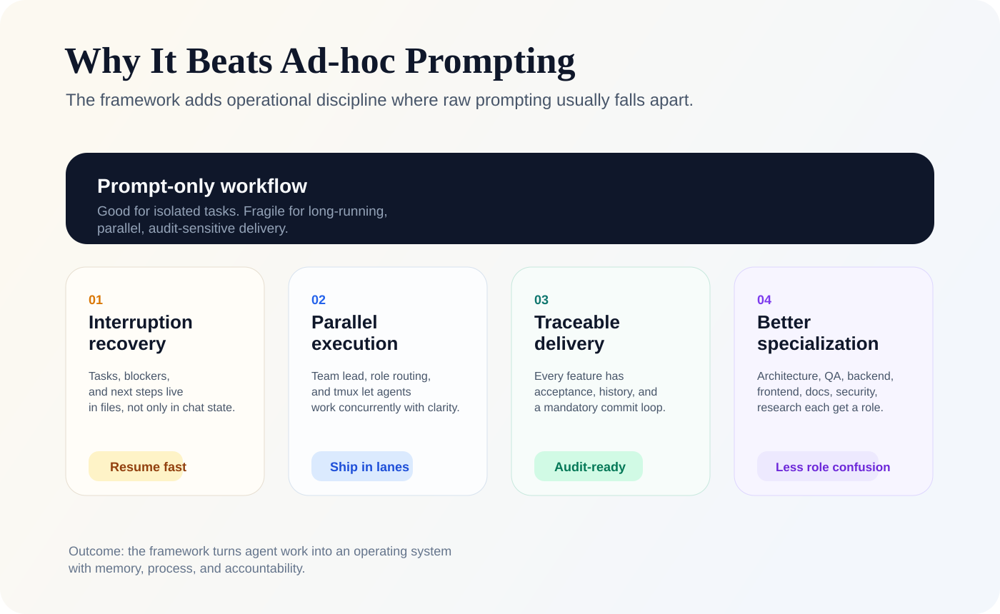
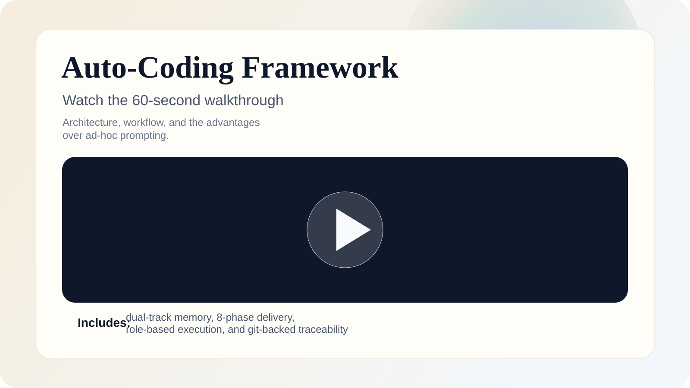

Auto-Coding Framework adds role clarity, process, and durable memory to long-running AI software work.

Agent Teams handle live orchestration. Files and Git preserve the project so work can pause, resume, and stay reviewable.

Requirements, product design, Stitch UI exploration, architecture, tasking, implementation, testing, deployment, and UAT stay connected.
setup.sh and init.sh.tasks.json, append progress.txt, then commit.
The framework turns improvisational agent work into a repeatable operating system with specialization, traceability, and recovery.

It is a template repository, a set of rules, and a durable state machine for projects that outlive a single chat session.
